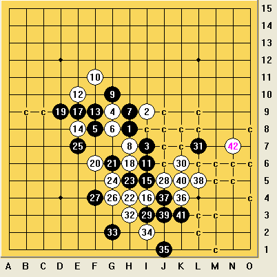

“最期之战”——山口论坛团体精彩对局评选进行中
#1 “最期之战”——山口论坛团体精彩对局评选进行中作者：忧郁的双眼 发表时间：2012-7-10 18:32:17
“最期之战”
——山口论坛团体精彩对局评选进行中
引 为扬论坛舆论之正气、引爱五水民之潮流，今特开此交流贴勾引大家参与进来，此乃配合爱五2012年第一大型活动——团体论坛赛之助兴活动，凡是参与者都有官方小礼物赠送，您支持的对局若是入选“十大”，还会有更大的惊喜等着您，走过路过不要错过哦亲！
罗索了这么多，其实小编我想说的就是，其实我们的论坛战看点还是很多的，大家要体谅裁判的难处，要理解棋手的辛苦，组织者的初衷大家不要忘，把视线转到对局上来！
评选规则如下：
本活动自即日起开始，到论坛战三阶段结束为止，凡是爱五子棋网注册用户均有投票参评的权利，参评分为两个阶段：
一 最期征集阶段
由开贴人，也就是小编我开贴抛砖引玉，凡是爱五水民均有资格每轮选一局棋作为你的支持对象，要求附带参评理由，越详细爆尿越多的加分越高，原则上后来者不允许挑选前面出现过的对局，除非是有猛尿要爆，比如对局双方鲜为人知的私人恩怨、对局过程中基情四射的心理暗战、颠覆性的棋路研究等等等等，注意，水民每轮只允许挑一盘，参赛棋手可以每轮挑两盘，各队领队可以每轮挑三盘，裁判大人可以每轮挑五盘，立贴者也就是小编我自然是多多益善啦！
二 最期评选阶段
当征集截止的时候，由爱五管理群内部讨论精益求精，内部选出二十盘对局，然后以这二十强为对象由无尽老师发起投票，按得票多寡排出第一届山口论坛团体赛的“十强五者”，凡是“十强五者”的支持者均有官方奖励附赠。
我的最期
若问我的最期，其实我很想吐一口烟望着远方寂寞的说：就是下一局！
哎呀，谁扔的鸡蛋？好贵的咧！
仓促组队的明教光明顶，走的是陈大雷路线，先定个番号再拉队员，原本队长是极地贱客，结果这丫的把队长当成出头鸟，非要把我架到火上烤！先后问过星月王族玺、牛奶、无伤、刺客这些“死”去多年的老骨灰无果后，我们队总算是编制齐全了，废话不多，搞死搞残搞怀孕~！
我没空翻比赛棋局，姑且拿我们队下过的棋来充下数，勾引下诸水民，刺激下众屌丝，因为我知道我自吹的越厉害，猪位拍砖的欲望就越HOLD不住，好吧，请求你们用完美的对局来鄙视我！
1 基情之战：第一轮，明教光明顶极地剑客（白）VS棋心愉悦一队一尘（黑）
ShowPost.asp?PageIndex=6&ThreadID=18002
自从世团冬瓜残四大招被大家拆烂后，所有人都在心里问自己：这世界上再没有值得期待的和谐之棋了么？棋地与墨水这局基情四射的地毯到和棋的对局给了大家答案！基情，不只存在于断背山，在我们爱五子棋，爱情，还是值得相信的。这一局棋，也给了未来弱队及殂击队以启发：黑方必和之战术是否可行？
对局没什么好评的，谁错谁死，大家需要做的就是欣赏二位主角此局中的你来我往，眉目间情丝流转，什么是黑丝，哪个有高跟，在这一瞬间，二人眼中都只有对方，倦鸟归林，基友双双把家还，这一分，你一半来我一半，你浓我浓羡煞旁人啊！
2 神杀之战：第一轮，明教光明顶极地剑客（白） VS明教黑木崖逆刃（黑）
ShowPost.asp?PageIndex=2&ThreadID=17933
明教最强两人终于正式对上了，有着最强终结者设置的两人，赌上了黑丝高跟制服一步裙，杀气腾腾磨刀霍霍，逆刃外势占尽只待先手是洪拳虎鹤双形架式，极地绵里藏针低桥短打一副咏春作派，神杀不出，二人间的空气都被抽干，凝重异常。
好了，废话这么说，其实他们的棋没什么好评的，只有一个字可讲：神杀！
列位水民，你们可以把此局作为你电脑配置的试金石，若是秒杀之，恭喜你，你的电脑是神级电脑了，你的软件已经合格了；若是左算白不杀，右算黑必胜，那么也恭喜你，你可以用这招骗别人了！
3 恢复之战：第一轮，明教光明顶鬃毛（黑）VS明教黑木崖潇洒（白）
ShowPost.asp?PageIndex=4&ThreadID=17932
我们队的定海神针，当然若是本次比赛办在十年前，鬃毛自然是无可争议的超级偶像，久疏战阵是否消磨了他的杀气这有待考证（久疏战阵的不止是他，除了小爱同学，我们仨都不务“正”业四五年了吧），所以能在战争初期有个合适的对手让他恢复恢复倒是他的幸运。
浦月六打，鬃毛似乎从一开战就犯了战略性错误，他总想从11手就开始地毯对手，所以是摸着石头前进中不断自己地毯自己，自己否定自己，一度陷入僵局。双方正常行棋到24手，鬃毛似乎看到了胜的希望，在他想来，借助D7这个点，搞活全盘就胜机在握了，不过因为白棋I10这样的点的存在总是能缓过一口气来。闭关两天后，鬃毛还是丢出了胜负手，并一如既往的延续他咄咄逼人的作风，丢了地毯谱出来。
4 教训之战：第一轮，明教光明顶鬃毛（黑）VS棋心愉悦一队闹静（白）
ShowPost.asp?PageIndex=4&ThreadID=18001
说实话，本局白棋杀得相当之漂亮，抛开一切理由借口，为杀手的一台喝彩是我能做的唯一的事。自信满满的鬃毛丢出了很随手的21，等待他的就是白棋绵绵无期的如潮进攻，各位，有空当摆下这个白棋，受益非浅啊。
5 忽悠之战：第一轮，明教光明顶忧郁的双眼（黑）VS棋心愉悦二队飞飞（白）
ShowPost.asp?PageIndex=5&ThreadID=17949
跟黄飞鸿认识有八年了吧，我们都是裁决殿的老人了，又都认识当年裁决四大缺德之首的星月王族玺，我老想忽悠黄飞鸿叫我一声叔，嘻嘻，就象玺的其他徒弟一样，这家伙固执的坚持各交各的朋友，喵，失望，恼火中！
浦六，前面镜像鬃毛VS潇洒，至于飞飞抄没抄，我反正是抄了，呵呵，22手他终于变着了，于是，我的嘴开始把不住门了，开始了对飞飞的嘴遁，还别说，咱中国的黄飞鸿就是比小日本的长门经磨，我的嘴遁竟然遇到对手了，似乎对他来说不下到连五则对局就不算结束，我没有问鬃毛，只是凭借初印象行至31手，我似乎遇到麻烦了，软件设置的漏洞让我原先拆的杀棋不成立了，那晚有些低落，又开始忽悠飞飞，耿直的飞飞语重心长的说我29其实是有杀滴。
那句话怎么说来着？哈哈，柳暗花明！当然，这不是英雄杀，我不是极地剑客，丫已经杀入魔了。换个手顺轻松VCT，在我跟极地嘴遁二人组的合作之下，飞飞终于投子认负了。
6 殂击之战：第一轮，明教光明顶忧郁的双眼（白）VS棋心愉悦一队游戏人间（黑）
ShowPost.asp?PageIndex=4&ThreadID=18004
胜了胜了又胜了！大鱼连下三城！
人脑大鱼的逆袭是第一轮的主看点，因为大鱼的存在，目测成为爱五十大热门词语之首，面对拿下一分又一分的游戏人间，葬身鱼腹的不乏飞飞阿呆这样的资深软谱，顿时我是亚历山大，殂击蓝鲸，成为了我的使命。当然我更愿意将此局命名为忽悠之战前传。事实上，我们两个都是喜欢玩心理战的。
长星一打开局，大鱼的作风一贯是布局为先，辅以心理战，所以从六手开始我就选择非主流，他想平衡过度到中局拼内功，我就设法把局势搞得扑朔迷离，正常演变到22，黑走出大弱手，直接丢先，我很开心的开刀拔剑，直攻右下角，黑棋从27手开始必败，29估计是害怕白下面做棋做到死，所以堵死白棋下路的进攻，30手天外飞仙，上下连接，锁定胜局。
好了，小编的这块砖已经拍下来了，诸位伯乐，把你们的最期之战一一分享出来吧！！！！
凡是跟贴推荐棋局的一律由官方赠送价值二十金币的鲜花三朵，凡是发表优秀棋评的由官方直接奖励金币，数额视棋评质量从三百到八百不等，爆惊人内幕的更有威望奖励等着你哦！水民们，爱五是我家，推波助澜靠大家！行动起来吧，骚年们！！
［ 小红眼镜 于 2012-7-10 18:51:04 时花20金币送鲜花一朵］
［ 冰雪笑醉 于 2012-7-10 19:23:16 时奖励此帖[金币加 100 威望加1］
［ 冰雪笑醉 于 2012-7-10 19:29:48 时花20金币送鲜花一朵］
［ 冰雪笑醉 于 2012-7-10 19:29:48 时花20金币送鲜花一朵］
［ 冰雪笑醉 于 2012-7-10 19:29:48 时花20金币送鲜花一朵］
［ 冰雪笑醉 于 2012-7-10 19:29:48 时花20金币送鲜花一朵］
［ 冰雪笑醉 于 2012-7-10 19:29:48 时花20金币送鲜花一朵］
［ 冰雪笑醉 于 2012-7-10 19:29:48 时花20金币送鲜花一朵］
［ 冰雪笑醉 于 2012-7-10 19:29:48 时花20金币送鲜花一朵］
［ 冰雪笑醉 于 2012-7-10 19:29:48 时花20金币送鲜花一朵］
［ 冰雪笑醉 于 2012-7-10 19:29:48 时花20金币送鲜花一朵］
［ 冰雪笑醉 于 2012-7-10 19:29:48 时花20金币送鲜花一朵］
［ 掌棋如烟 于 2012-7-10 21:30:27 时花20金币送鲜花一朵］
［ 掌棋如烟 于 2012-7-10 21:30:27 时花20金币送鲜花一朵］
［ 掌棋如烟 于 2012-7-10 21:30:27 时花20金币送鲜花一朵］
［ 掌棋如烟 于 2012-7-10 21:30:27 时花20金币送鲜花一朵］
［ 掌棋如烟 于 2012-7-10 21:30:27 时花20金币送鲜花一朵］
［ 淡红的秋樱 于 2012-7-10 22:11:44 时花20金币送鲜花一朵］
［ 失落刀 于 2012-7-11 6:50:24 时花20金币送鲜花一朵］
［ 失落刀 于 2012-7-11 6:50:24 时花20金币送鲜花一朵］
［ 失落刀 于 2012-7-11 6:50:24 时花20金币送鲜花一朵］
［ 失落刀 于 2012-7-11 6:50:24 时花20金币送鲜花一朵］
［ 失落刀 于 2012-7-11 6:50:24 时花20金币送鲜花一朵］
［ 失落刀 于 2012-7-11 6:50:24 时花20金币送鲜花一朵］
［ 失落刀 于 2012-7-11 6:50:24 时花20金币送鲜花一朵］
［ 失落刀 于 2012-7-11 6:50:24 时花20金币送鲜花一朵］
［ 掌棋宣传员 于 2012-7-11 15:02:12 时花20金币送鲜花一朵］
#2 Re:“最期之战”——山口论坛团体精彩对局评选进行中作者：逆刃 发表时间：2012-7-10 18:53:26
第一局输得最可惜了，其实也算不上什么神杀吧，终结者一分钟内基本上能出正解，当时记得左边的15有个是败的，本来考虑的好像是13上面的15来着，然后就随便拆了下下面的三个15，回棋的时候正好在拆这个15，加上正好那晚喝了不少，就鬼使神差的回了这个15了。。。
极地下16的时候我愣住了，尼玛，才反应过来，就直接投了。。第一盘棋，有点大意了。所以后面要汲取教训！

［此帖子已被 逆刃 在 2012-7-10 18:56:35 编辑过］
［ 冰雪笑醉 于 2012-7-10 19:30:03 时花20金币送鲜花一朵］
［ 冰雪笑醉 于 2012-7-10 19:30:03 时花20金币送鲜花一朵］
［ 冰雪笑醉 于 2012-7-10 19:30:03 时花20金币送鲜花一朵］
［ 冰雪笑醉 于 2012-7-10 19:30:03 时花20金币送鲜花一朵］
［ 冰雪笑醉 于 2012-7-10 19:30:03 时花20金币送鲜花一朵］
［ 失落刀 于 2012-7-11 6:51:33 时花20金币送鲜花一朵］
［ 失落刀 于 2012-7-11 6:51:33 时花20金币送鲜花一朵］
［ 失落刀 于 2012-7-11 6:51:33 时花20金币送鲜花一朵］
［ 失落刀 于 2012-7-11 6:51:33 时花20金币送鲜花一朵］
［ 失落刀 于 2012-7-11 6:51:33 时花20金币送鲜花一朵］
［ 失落刀 于 2012-7-11 6:51:33 时花20金币送鲜花一朵］
［ 失落刀 于 2012-7-11 6:51:33 时花20金币送鲜花一朵］
［ 失落刀 于 2012-7-11 6:51:33 时花20金币送鲜花一朵］
#3 Re:“最期之战”——山口论坛团体精彩对局评选进行中作者：冰雪笑醉 发表时间：2012-7-10 19:55:03
好吧，先占个位置，我也写几个对局。。
可否奖励威望？
［ 失落刀 于 2012-7-11 6:52:12 时花20金币送鲜花一朵］
［ 失落刀 于 2012-7-11 6:52:12 时花20金币送鲜花一朵］
［ 失落刀 于 2012-7-11 6:52:12 时花20金币送鲜花一朵］
［ 失落刀 于 2012-7-11 6:52:12 时花20金币送鲜花一朵］
［ 失落刀 于 2012-7-11 6:52:12 时花20金币送鲜花一朵］
［ 失落刀 于 2012-7-11 6:52:12 时花20金币送鲜花一朵］
#4 Re:“最期之战”——山口论坛团体精彩对局评选进行中作者：屏蔽 发表时间：2012-7-10 20:11:48

我在拆34的时候其实不过是考虑黑棋左边无杀白棋右边直接构必胜型，一点都不难。让我感慨的其实是大鱼的这套VCT解决了另一个23的问题。
［ 失落刀 于 2012-7-11 6:52:46 时花20金币送鲜花一朵］
［ 失落刀 于 2012-7-11 6:52:46 时花20金币送鲜花一朵］
［ 失落刀 于 2012-7-11 6:52:46 时花20金币送鲜花一朵］
［ 失落刀 于 2012-7-11 6:52:46 时花20金币送鲜花一朵］
［ 失落刀 于 2012-7-11 6:52:46 时花20金币送鲜花一朵］
［ 失落刀 于 2012-7-11 6:52:46 时花20金币送鲜花一朵］
［ 冰雪笑醉 于 2012-7-11 18:19:51 时花20金币送鲜花一朵］
［ 冰雪笑醉 于 2012-7-11 18:19:51 时花20金币送鲜花一朵］
［ 冰雪笑醉 于 2012-7-11 18:19:51 时花20金币送鲜花一朵］
［ 冰雪笑醉 于 2012-7-11 18:19:51 时花20金币送鲜花一朵］
［ 冰雪笑醉 于 2012-7-11 18:19:51 时花20金币送鲜花一朵］
#5 Re:“最期之战”——山口论坛团体精彩对局评选进行中作者：花斯 发表时间：2012-7-11 12:08:20

［此帖子已被 花斯 在 2012-7-11 12:09:44 编辑过］
［ 失落刀 于 2012-7-12 20:31:31 时花20金币送鲜花一朵］
#6 Re:“最期之战”——山口论坛团体精彩对局评选进行中作者：小小亦默 发表时间：2012-7-11 12:19:25
炫飞缘灭（黑）对闹静 黑胜~~~ 黑棋下得非常之强大 白棋的12手也是很帅的手段 黑棋19手神之一手 实在很帅
炫飞缘灭（黑）对鬓毛 和棋 19手很难下 白棋22到34的手段想来真的是非常之暴力 大局观非常之强大 加上后面31处的一个强骗 不得不说这盘白棋很有味道 后面的黑棋交换保和手段35到43也是唯一不错的下法 44下弱失去机会 鬓毛大师估计为此还在耿耿于怀
个人觉得这两盘棋都很经典
［ 冰雪笑醉 于 2012-7-11 18:19:16 时花20金币送鲜花一朵］
［ 冰雪笑醉 于 2012-7-11 18:19:16 时花20金币送鲜花一朵］
［ 冰雪笑醉 于 2012-7-11 18:19:16 时花20金币送鲜花一朵］
［ 冰雪笑醉 于 2012-7-11 18:19:16 时花20金币送鲜花一朵］
［ 冰雪笑醉 于 2012-7-11 18:19:16 时花20金币送鲜花一朵］
［ 失落刀 于 2012-7-12 20:29:19 时奖励此帖[金币加 100 威望加1］
#7 Re:“最期之战”——山口论坛团体精彩对局评选进行中作者：鬃毛 发表时间：2012-7-11 16:23:47
44那个是局部最好的应对了 这个乱搞得话 后面黑有从O8借过来的一条斜线反杀的
［ 冰雪笑醉 于 2012-7-11 18:20:46 时花20金币送鲜花一朵］
［ 冰雪笑醉 于 2012-7-11 18:20:46 时花20金币送鲜花一朵］
［ 冰雪笑醉 于 2012-7-11 18:20:46 时花20金币送鲜花一朵］
［ 失落刀 于 2012-7-12 20:37:38 时花20金币送鲜花一朵］
［ 失落刀 于 2012-7-12 20:37:38 时花20金币送鲜花一朵］
［ 失落刀 于 2012-7-12 20:37:38 时花20金币送鲜花一朵］
［ 失落刀 于 2012-7-12 20:37:38 时花20金币送鲜花一朵］
［ 失落刀 于 2012-7-12 20:37:38 时花20金币送鲜花一朵］
［ 失落刀 于 2012-7-12 20:37:38 时花20金币送鲜花一朵］
#8 Re:“最期之战”——山口论坛团体精彩对局评选进行中作者：小小亦默 发表时间：2012-7-11 17:47:27
44我觉得应该有更积极的手段 比如34左边 黑棋应该没什么东西吧 嘿嘿
［ 失落刀 于 2012-7-12 20:41:04 时花20金币送鲜花一朵］
#9 Re:“最期之战”——山口论坛团体精彩对局评选进行中作者：516266418 发表时间：2012-7-17 20:49:31
求神杀正解。。#10 Re:516266418【==Re:“最期之战”——山口论坛团体精彩对局评选进行中==】作者：忧郁的双眼 发表时间：2012-7-17 20:57:20
楼上的，你的电脑不及格哦！#11 Re:忧郁的双眼【==Re:516266418【==Re:“最期之战”——山口论坛团体精彩对局评选进行中==】==】作者：516266418 发表时间：2012-7-17 23:01:49
有什么好介绍附带地址
#12 Re:516266418【==Re:忧郁的双眼【==Re:516266418【==Re:“最期之战”——山口论坛团体精彩对局评选进行中==】==】==】作者：极地剑客 发表时间：2012-7-18 3:14:31
引用：有MM就有地址~
原文由 516266418 发表于 2012-7-17 23:01:49 :
有什么好介绍附带地址